Helping MongoDB University students keep track of their course progress.
Problem Each course in MongoDB University has a syllabus and progress page. The syllabus page shows a list of the chapter sections that make up the course, and the progress page shows students their current grades in the course.
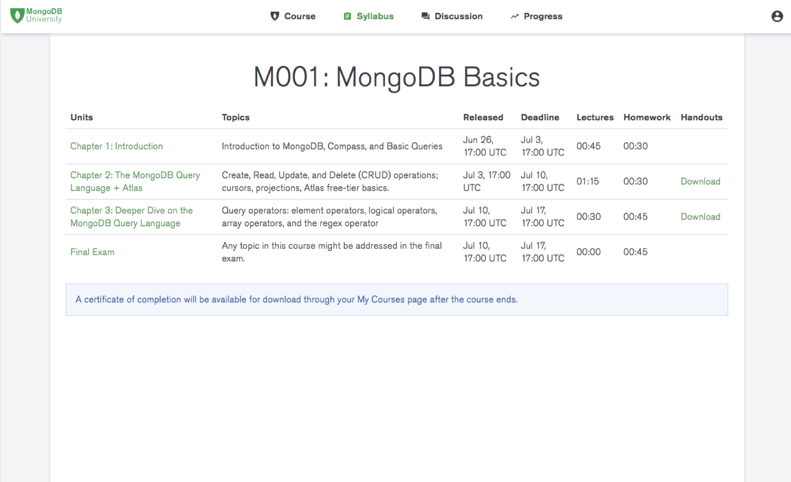
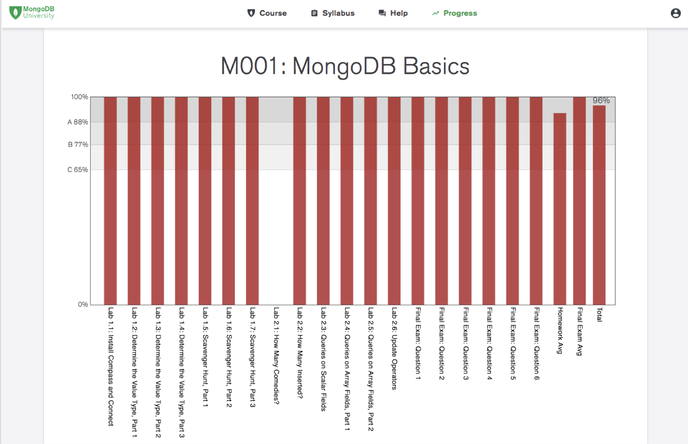
However, the MongoDB University team had been receiving numerous complaints from users' feedback- which should have been addressed by these pages. Examples of common feedback included:
- "I want to do well in the course, but I don't know how the grades work."
- "I can't keep up with the course. There's so many assignments going on."
My product manager and I came up with a design-driven plan to investigate these issues and redesign a syllabus and progress page. The overall goal was to address the users' problems, decrease the number of user complaints, and ultimately increase user engagement and retainment for business. Logistics
- Project Type: Internship
- Team: 1 Designer, 1 Product Manager, 1 Developer
- My Roles: Research, Interaction Design, Data Visualizing, User Testing
- Time Span: 5 Weeks
- Interviews
- Card Sorting
For the interviews, 11 users were asked a variety of open-ended questions about the context in which they complete MongoDB courses, their goals when taking courses, and issues with interacting with the syllabus and progress pages. These users primarily consisted of data administrators and developers.
For the card sorting activity, key pieces of information about courses, such as chapter titles, chapter start dates, and homework grades, were written on cards. They were then asked to organize these cards in order of importance to them.
After the user research was conducted and the results were synthesized, the main research insights were:
- Users don't understand how grading works because the existing graphs are unclear.
- Users can't keep up with courses because the assignment listings feel unorganized.
- Users should be understand their grades and progress.
- Users should be able to tell which assignments are due first and easily access them.
- Users should have an idea of the content that's being covered in the course.
I then started sketching out different variations of the UI on paper that would address the research-based design guidelines. To decide which designs to choose, I considered usability, efficiency, and feasability through consulting with engineers on my team.
- Overall Layout 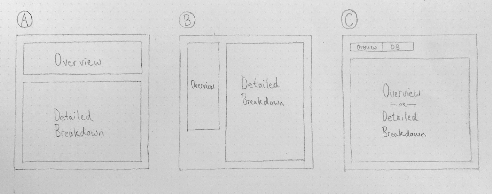 I decided to go with A so that users have the option to quickly see an overview or dive into the details of the course. I also felt that horizontal orientation of the overview section would scale content well.
- Chapter Breakdown 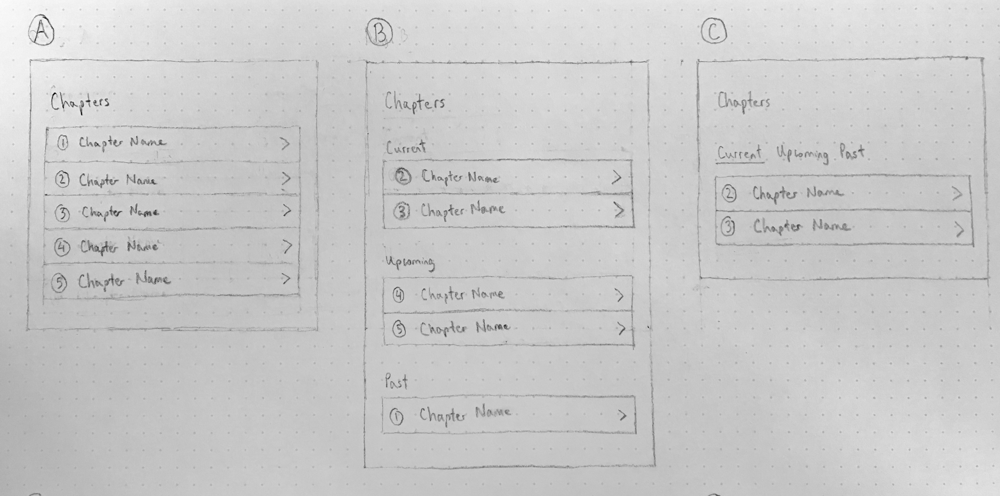 I decided to go with B so that users would first see the chapters that are currently available and thus require immediate attention, followed by upcoming and past chapters - all through a single page at a glance.
- Course Progress 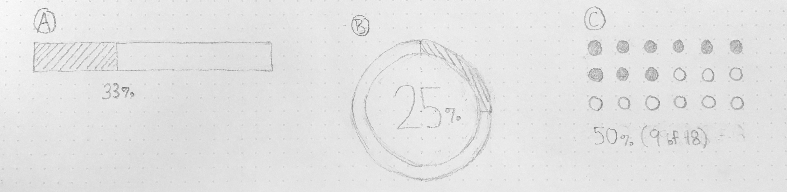 I decided to go with B because it felt the most compact and also had room in the middle to show a simple, large progress percentage.
- Grades 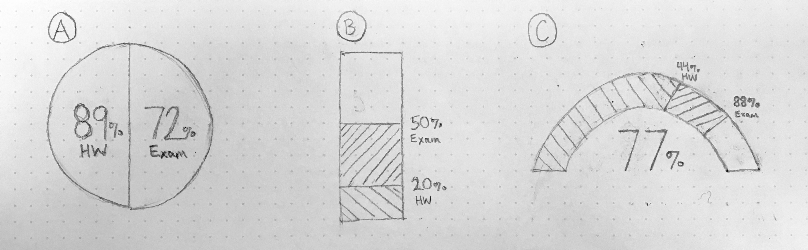 I went with a simplified version of A with only showing an overall grade to avoid complexity and keep things simple. There would be an option to flip over the visualization and reveal a detailed breakdown.
After some further ideation and trade-off analysis, I finally wove my designs together into a coherent wireframe:
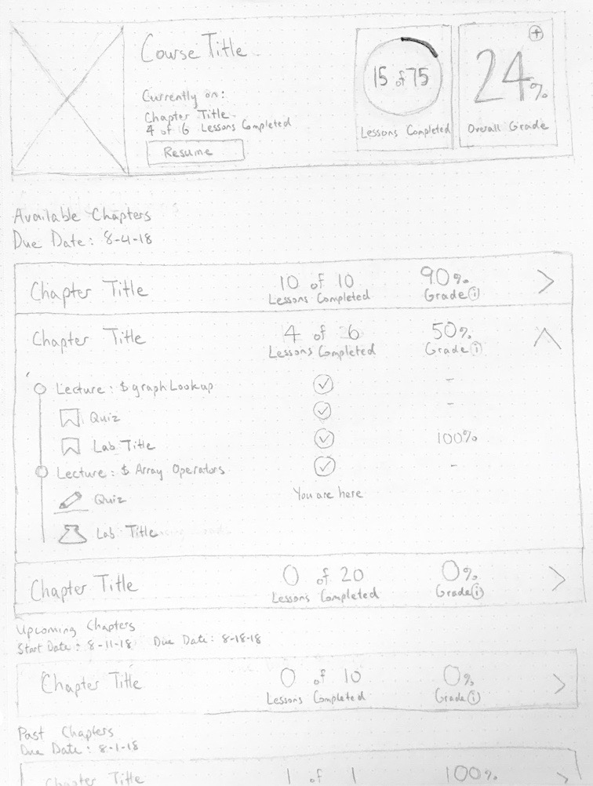
Firstly, the syllabus and progress pages were combined into a single page. The rationale behind this design decision was that many of the requested user tasks were similar to one another and could thus accomplished in a unified, hybrid design layout with hybrid elements from both former pages.
The top section shows a description of the course and an overview of the students' progress and grades, so students can instantly see a high-level picture of how they're doing in the course.
The user can also see a breakdown of the chapters they're currently working as well as the ones they finished and yet to finish. Chapters in progress are placed towards the top so that users can see them first.
Progress was chosen to be represented using "x of y" and grades using "x%" to help differentiate them from one another. Moreover, the progress' fractions were meant to emphasize current completion, while the grades' percentages were meant to reflect traditinonal grading systems. Peer Review and Design Critique After the wireframes were created, a peer review with my engineering team and design critique with my design team were conducted to gather input on the initial designs.
To present the wireframes to my peers, the user tasks were first introduced, and then explanations were given regarding how the user tasks could be completed in the wireframe design.
The main pieces of feedback were:
- The additive grading system seemed discouraging- grades start at 0% and increase towards 100% after completing assignments
- The overall grade system isn't transparent- the 50:50 distribution between homework and exams could be more clear 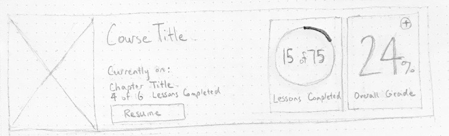
- Chapter weighting should be shown more accurately- percentage grades for each chapter do not show weighted grade values; e.g. chapters with more homeworks should be weighted more heavily 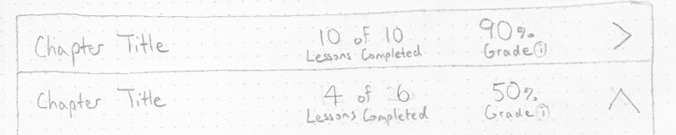
- Expanded chapter content would be too extensive in most realistic circumstances and would thus make the dropdown interfaces very long 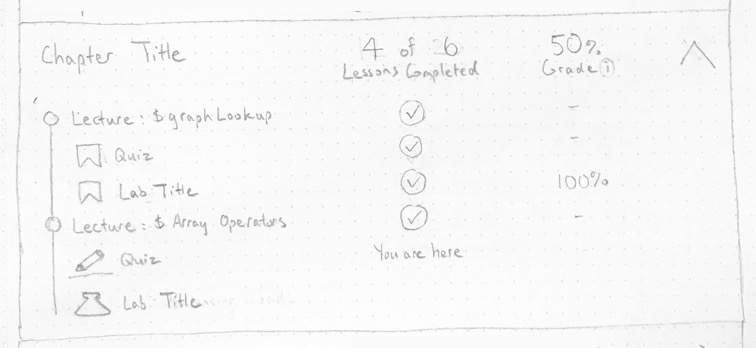
The updated design changes that were implemented include:
- Replaced the overall grade percentage with a data visualization that showed grading category breakdowns, which was homework as 50% and the exam as 50% 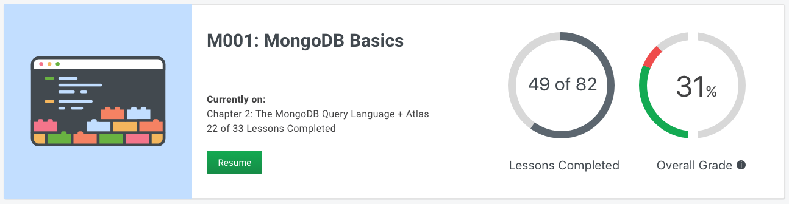
- Replaced the chapter grade percentages with correct and incorrect badges to show the graded weight; i.e. more badges for a chapter means greater impact on the overall grade 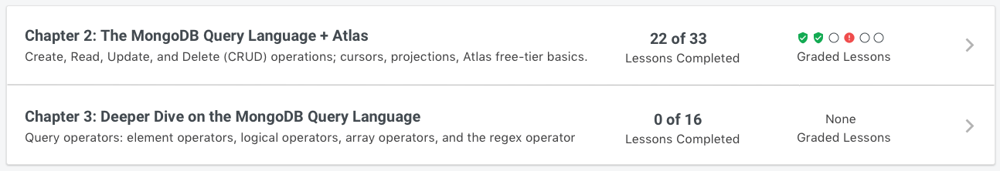
- Removed the accordion dropdown and changed the interaction of clicking on a chapter to navigating to the course page itself, which already shows an outline of the chapter
Next, the mockups were connected together to create an Invision prototype, which can be accessed here.
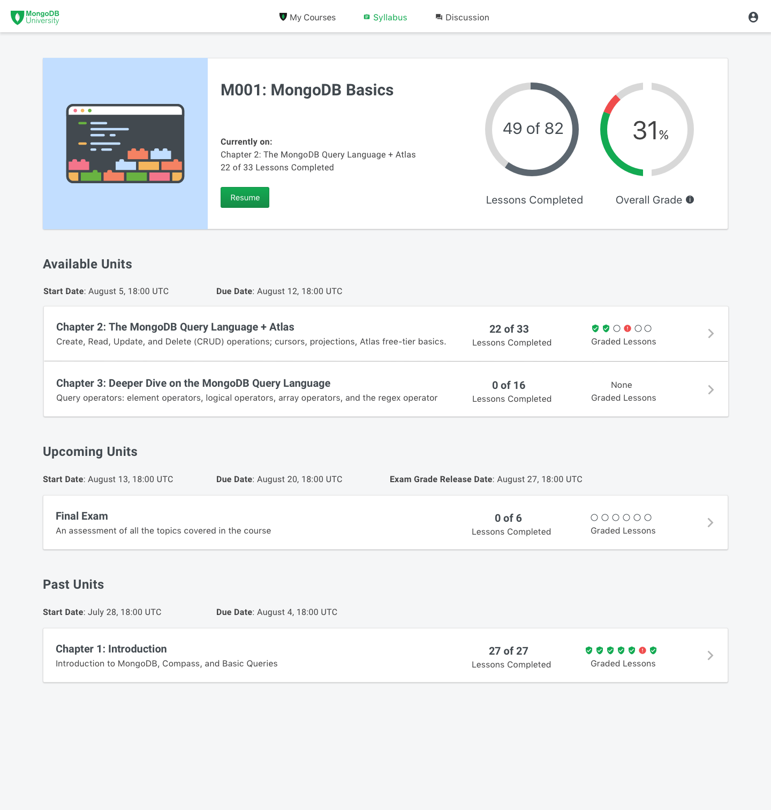
User Testing After creating the prototype based on the updated designs, user testing was conducted over Zoom video meetings with 11 external users, who consisted of both database administrators and developers. The main goals of the user testing were to:
- Determine whether users would be able to complete the user tasks
- Gather any other input they may have, such as whether the user tasks accurately reflect their needs and goals
The user testing methods used included:
- Think aloud task walkthrough
- Follow-up interviews
Users were given a scenario as context and then asked to perform tasks in the prototype based on the scenario. An example of a task scenario was having the user imagine that they have a busy schedule and then asking them to try to determine the amount of coursework they need to finish by a certain deadline.
After each of these tasks, users were asked follow-up questions about their decision making.
The results were analyzed, and the main user testing insights were:
- Users could tell what the course was about, but would still like a brief written description of the course instead of having to inspect the chapter titles
- Users had trouble determining how the course's total duration
- Only about half of the users understood the overall grade visualization
- Users liked the badge visualization for graded lessons because they could see the number of graded lessons and the current grade of each lesson
- Users expected to receive about a recommendation of next steps after completing a course, such as taking another related course or reading related documentation
- Replaced the semi-circle grade visualization with a bar chart, which features clear titles for the grading categories- homeworks and the exam 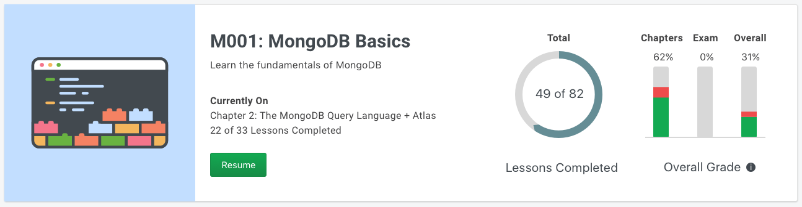
- Added recommendations for similar courses and related readings for users who have completed the course 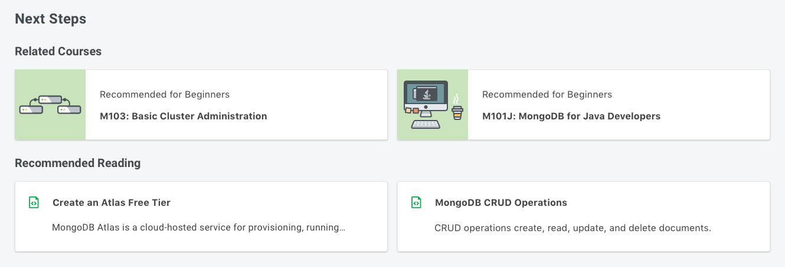
- Added a course description to the top overview section so that users can read a brief summary of the course
- Added the course duration to the overview section before a course has begun, so users can determine a course's time commitment without having to browse each chapter's dates and calculate the total duration
- Unified the tooltip styles under a commonly used tooltip style from the MongoDB design system
The updated designs were then connected together to create the latest Invision prototype for future user testing sessions.
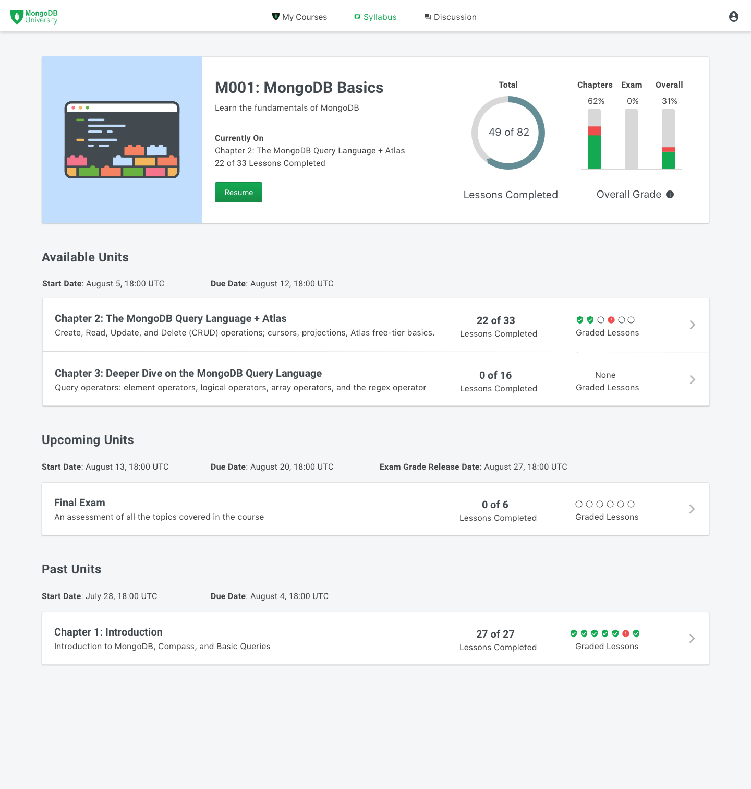
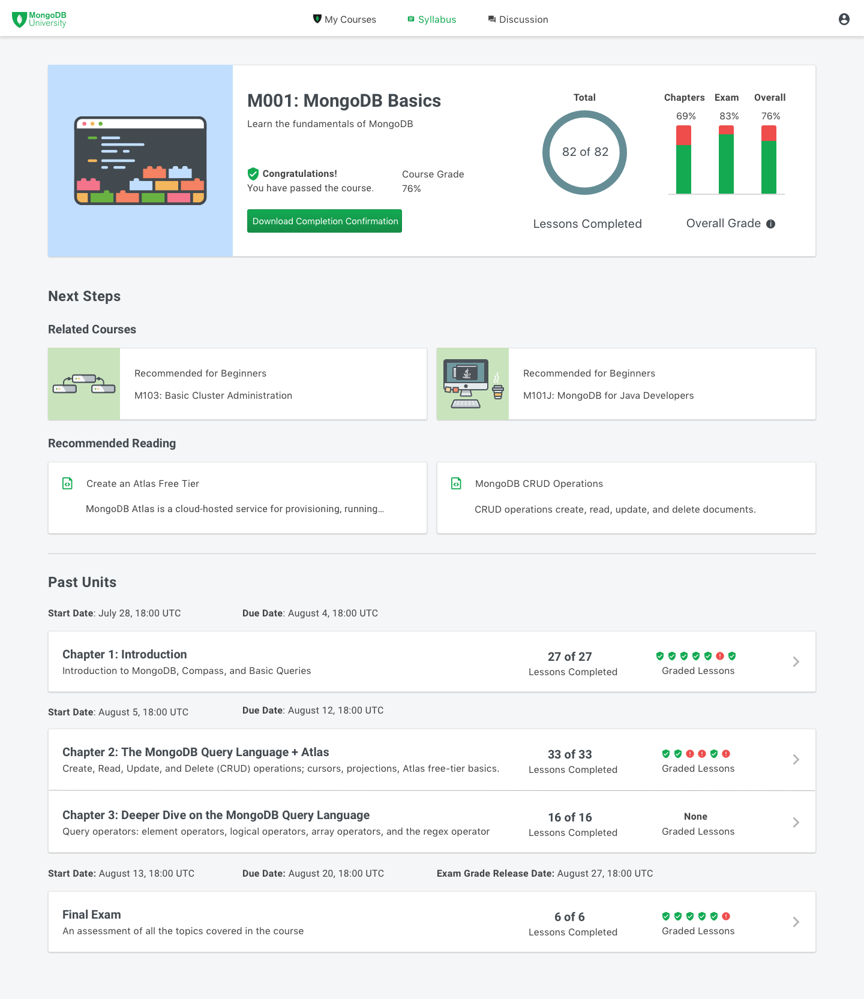
Impact and Next Steps At this point in the project, it was early August, and my internship was coming to an end. Fortunately, my team and I made significant progress over the previous 5 weeks.
We were able to identify our users' problems and iteratively design solutions for them. The qualitative and quantitative results from users validated our progress, and we felt confident moving forward that the new designs would improve users' experience and ultimately increase user engagement.
Regarding next steps, the designs are currently undergoing final user testing and design iterations. The implementation of the final design deliverables are scheduled to be completed by Q3 2019.
In the meantime, the latest Invision prototype of the updated design can be found here.


Made with  by Jesse
by Jesse
by Jesse